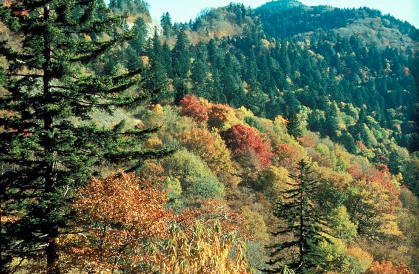
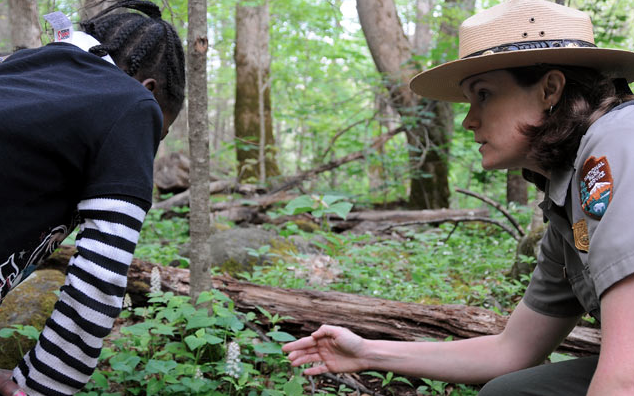

Nature
Biological diversity is the hallmark of Great Smoky Mountains National Park, which encompasses over 800 square miles in the Southern Appalachian Mountains. No other area of equal size in a temperate climate can match the park's amazing diversity of plants, animals, and invertebrates. Over 17,000 species have been documented in the park: Scientists believe an additional 30,000-80,000 species may live here.
 learn moreResearch-All Taxa Biodiversity Inventory
There has been much written about the accelerating crisis in protecting global biodiversity. This is not just a tropical issue, but it is also an issue in the United States. How are we to make critical decisions about protection, when we do not even know what species exist, or what their relative abundance and distribution are?
learn moreCades Cove
Cades Cove is a broad, verdant valley surrounded by mountains and is one of the most popular destinations in the Great Smokies. It offers some of the best opportunities for wildlife viewing in the park. Large numbers of white-tailed deer are frequently seen, and sightings of black bear, coyote, ground hog, turkey, raccoon, skunk, and other animals are also possible.
learn moreEducation
How would you like to have a waterfall in your classroom? Or seven hundred and fifty white tailed deer, a million blooming wildflowers, and the largest collection of historic log buildings in the east? You can have all of these and more when you use the park as your classroom to share the stories and science of the Great Smoky Mountains with your students.
 learn more